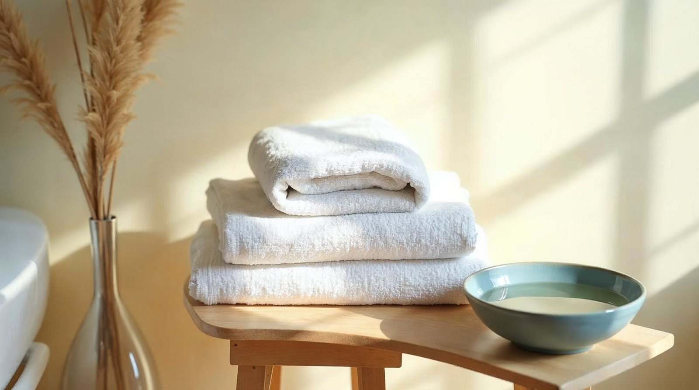
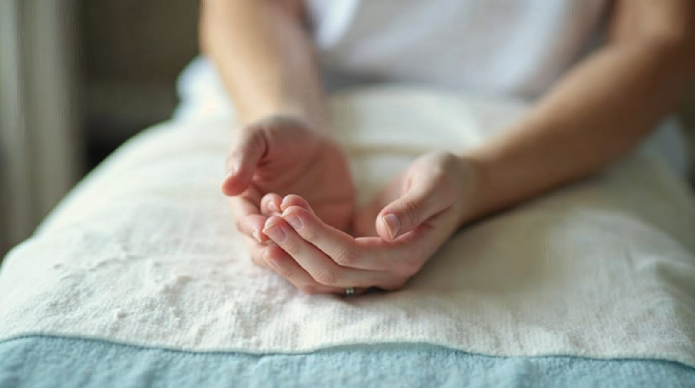
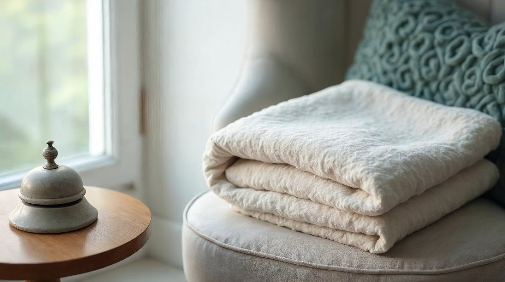
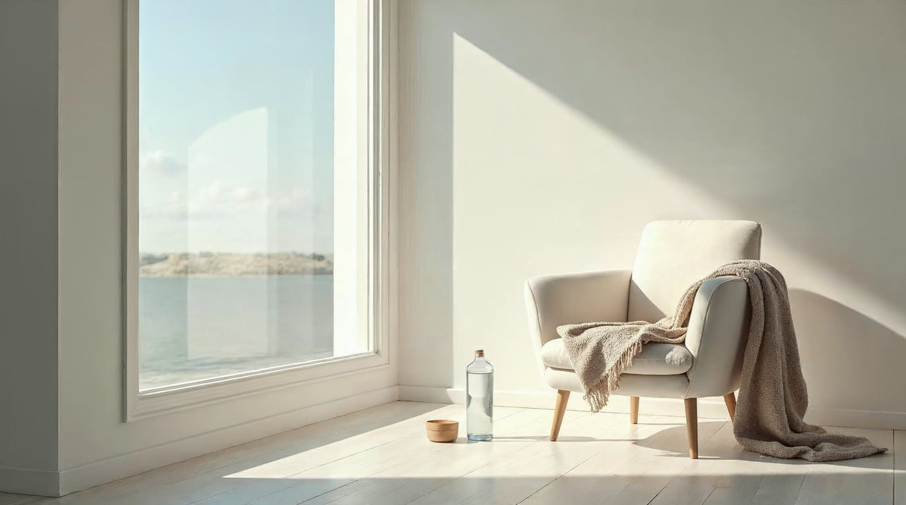
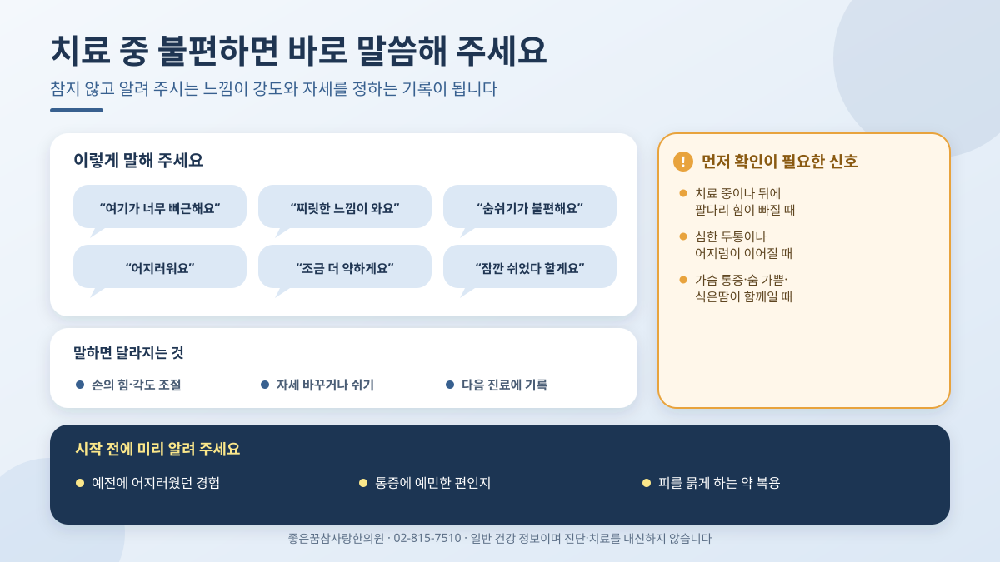

이종호 한의사 감수좋은꿈참사랑한의원 대표원장 (한의사 면허번호 19769)발행 2026-11-23 · 수정 2026-11-26
이 글의 차례
네, 그 자리에서 바로 말씀해 주세요. 치료 침대에 엎드려 있으면 등 뒤에서 무슨 일이 일어나는지 보이지 않고, 찌릿하거나 숨이 답답해도 "원래 이런 건가" 하고 참게 됩니다. 저는 그 순간 들려주시는 한마디로 손의 힘과 침의 깊이를 다시 맞춥니다.
진료실에서 이런 말씀을 자주 듣습니다. 아프다고 하면 엄살 같아서, 선생님이 알아서 하시는데 괜히 끼어드는 것 같아서 말을 못 했다고요. 처음 와 본 곳에서 처음 보는 사람에게 몸을 맡기고 누워 있으니, 말이 잘 안 나오는 게 당연하지요.
그래도 이 말씀만은 꼭 드리고 싶습니다. 불편하다는 말은 치료를 방해하는 말이 아니라, 제 손이 미처 알아채지 못한 것을 알려 주는 말입니다. 왜 그런지, 어떻게 말하면 되는지, 그 말을 들으면 제가 무엇을 바꾸는지 차례로 적어 보겠습니다.
왜 참지 말고 말해야 할까요
같은 힘, 같은 자세라도 그날의 몸 상태와 긴장 정도에 따라 느낌이 달라집니다. 어젯밤 잠을 설쳤는지, 끼니를 걸렀는지, 오는 길에 서둘렀는지에 따라 같은 자극이 시원하게도, 버겁게도 느껴질 수 있습니다. 지난번에 괜찮았던 세기가 오늘도 괜찮으리라는 법은 없지요.
참으려고 몸에 힘을 주면 근육이 버티면서 오히려 불편이 커지는 경우가 있습니다. 침과 추나를 같은 날 할 때 저는 대개 침을 먼저 놓고 추나를 이어 갑니다. 굳은 근육을 먼저 풀어 두면 교정할 때 몸이 덜 긴장할 수 있어서인데, 이를 악물고 버티시면 그 순서의 뜻이 흐려집니다.
손끝으로 읽는 반응도 흐려집니다. 아파도 참아야 정확하다고 생각하기 쉽지만, 불편하면 바로 말씀해 주셔야 세기를 조절하고 반응도 제대로 볼 수 있습니다. 찌릿함이나 어지럼, 숨이 답답한 느낌은 방법을 바꾸거나 잠시 쉬어야 한다는 신호일 수 있어 더욱 그렇습니다.
세게 받을수록 좋다고 말씀드리지 않습니다. 침의 개수나 자극의 세기가 치료의 질을 정하지 않고, 지금 이 몸에 맞는 자리와 자극량을 고르는 일이 먼저라고 생각합니다. 참으면서 받은 날은 치료 뒤 몸살처럼 뻐근함이 더 크게 느껴지는 분도 있습니다.
말씀해 주신 느낌은 그날로 끝나지도 않습니다. 어느 자리에서 어떤 느낌이 왔는지는 다음 진료에서 세기와 자세를 정하는 기록이 됩니다. 오늘의 한마디가 다음번 치료의 출발점이 되는 셈이지요.
저는 치료가 되도록 편안해야 하고, 받고 나서 기분이 좋아야 한다고 생각합니다. 끝까지 버티며 겨우 마치는 치료는 제가 바라는 모습과 거리가 멀지요. 그래서 세게 하기 전에 먼저 묻고, 하는 동안에도 묻고, 마친 뒤에도 다시 묻습니다.

손으로 느끼고, 그 느낌이 맞는지 여쭙습니다
저는 오랫동안 추나를 많이 해 왔습니다. 추나를 할 때는 손을 대고 환자분께 묻습니다. 여기를 움직일 때 어떠신지, 아까 아프다고 짚으신 데가 여기인지. 제가 짐작한 자리와 환자분이 손가락으로 가리키는 자리가 조금 다르면, 손을 옮겨 다시 봅니다.
진맥을 배울 때도 그랬습니다. 제게 진맥을 가르쳐 준 동료가 추나하던 그 손끝 감각으로 진맥을 많이 해 보라고 권했을 때, 저는 이미 해 오던 일이 하나 있다는 걸 알았습니다. 손으로 느끼고, 그 느낌이 맞는지 사람에게 묻는 일이었습니다.
진맥 실습 때 들은 말 가운데 지금도 떠올리는 말이 있습니다. 잘 모르겠으면 손을 한번 떼라는 말입니다. 손을 다시 얹으면 제가 얼마나 세게 누르고 있었는지부터 알게 됩니다. 손끝은 생각보다 자기 힘을 잘 모르거든요.
그래서 치료 중에 "그건 아닌데요", "거기보다 조금 아래요" 하고 말씀해 주시면 저는 반갑습니다. 자기 몸에서 언제 무슨 일이 일어나는지 가장 오래 지켜본 분은 제 앞에 누운 그분이니까요. 저는 거기서부터 다시 듣고, 다시 손을 얹습니다.
기본적인 치료일수록 의사가 직접 보아야 한다고 생각합니다. 침을 놓으려면 한의사가 환자분 곁에 직접 가서 봐야 하고, 저는 그 짧은 시간에 지난번과 무엇이 달라졌는지를 묻습니다. 그 대답 하나가 그날 손의 힘을 정하니, 말씀을 아끼지 말아 주세요.

이렇게 말해 주세요
- "여기가 너무 뻐근해요"
- "찌릿한 느낌이 와요"
- "숨쉬기가 불편해요"
- "어지러워요"
- "조금 더 약하게 해 주세요"
- "잠깐 쉬었다 할게요"
무엇이 정상인지 판단하실 필요는 없습니다. 침이나 약침을 놓는 동안 제가 "어떠세요?" 하고 여쭙는 것은 정답을 찾으려는 게 아니라 느낌 그대로를 듣고 싶어서입니다. 시원하다, 묵직하다, 찌릿하다, 저리다 같은 짧은 말이면 충분해요.
침을 맞을 때 뻐근하거나 묵직한 느낌은 흔한 편입니다. 그래도 그 느낌이 버겁게 커지면 말씀해 주세요. 어지럽거나 식은땀이 나거나 속이 울렁거리면 망설이지 말고 바로 알려 주셔야 합니다. 저는 그 자리에서 치료를 멈추고 먼저 살피겠습니다.
뻐근한지, 찌릿한지, 저린지는 침의 깊이와 방향을 정하는 데 바로 쓰이는 정보입니다. 특히 어딘가로 찌릿하게 퍼지는 느낌은 방향을 바꾸는 신호가 되기도 합니다. 약침은 얕은 층과 깊은 층에 나누어 놓기도 해서, 층마다 느낌이 다를 수 있다는 점도 미리 말씀드립니다.
말이 길 필요도 없습니다. "잠깐만요" 한마디면 됩니다. 그 말을 들으면 저는 먼저 손을 멈추고 어디가 어떻게 불편하신지 여쭙겠습니다. 침이 꽂혀 있을 때는 몸을 크게 움직이기 전에 말씀부터 해 주세요.

말하면 달라지는 것
- 손의 힘이나 각도를 조절합니다.
- 자세를 바꾸거나 잠시 쉽니다.
- 필요하면 그날의 치료 방법을 바꿉니다.
- 다음 진료 때 어떤 느낌이었는지 기록해 이어서 참고합니다.
추나는 "뚝" 소리를 내는 것이 목표가 아닙니다. 몸이 편안하게 움직일 수 있는 방향을 찾는 것이 목표라서, 부드럽게 근육을 풀거나 관절을 천천히 움직이는 방법도 많이 씁니다. 받는 중에 불편하다고 하시면 세기를 줄이고, 같은 부위라도 그날 몸 상태에 따라 기법을 달리합니다.
추나에도 교정추나부터 비교적 부드러운 손길의 두개천골추나까지 여러 기법이 있어, 강한 자극이 부담스러우시면 그에 맞춰 기법과 세기를 고릅니다. 체외충격파도 강도가 높을수록 좋은 것이 아니어서, 견딜 수 있는 범위 안에서 반응을 보며 조절합니다.
오늘은 여러 가지를 다 받기 버겁다고 말씀하셔도 괜찮습니다. 많이 받는다고 좋은 것이 아니라, 오늘 상태에 맞는 치료를 고르는 게 먼저니까요. 그런 날은 그날 가장 불편한 곳 하나에 집중하기도 합니다.
말씀은 기록으로 이어집니다. 저희는 치료 부위와 반응을 기록하고, 다음 방문 때 달라진 점부터 여쭙습니다. 담당 원장이 바뀌는 날에도 이전 진료 내용을 참고할 수 있도록 기록을 함께 봅니다.
치료가 끝난 뒤에 알게 된 불편도 들려주세요
치료 중에는 괜찮았는데 집에 가는 길에, 혹은 다음 날 아침에 뻐근함이 올라오는 분도 있습니다. 침 자리에 작은 멍이 들기도 하고요. 이런 이야기도 치료 중에 해 주시는 말씀만큼 소중해요.
처음 오셨을 때 환자분도 저도 잘 몰랐던 것이 두 번째 만남에서 드러날 때가 있습니다. 제가 좋겠다고 생각해서 드린 치료가 그분의 하루에서는 어땠는지, 그 대답은 다음에 만나야 들을 수 있으니까요.
치료를 이어 가다 보면 처음 불편했던 쪽 말고 반대쪽이 불편하다고 느끼시는 분도 있습니다. 가장 큰 불편에 가려 덜 느껴졌던 곳이 드러나는 경우가 있어서, 이런 변화도 숨기지 말고 말씀해 주세요. 처음 불편했던 곳과 새로 불편한 곳을 함께 다시 봅니다.
다시 오신 분께는 지난번 이야기부터 꺼냅니다. 지난번에 침 놓을 때 찌릿하다고 하셨으면, 이번에는 그 자리부터 조심스럽게 시작합니다. 초반에 자주 얼굴을 보여 주시면 제가 놓치는 것이 줄어듭니다.
먼저 이렇게 여쭙니다
- 전에 침이나 추나를 받고 어지러웠던 적이 있나요?
- 지금 드시는 약이 있나요? 특히 피를 묽게 하는 약은요?
- 오늘 기운은 어떠세요? 식사는 하셨나요?
- 골다공증이나 최근 수술·골절, 임신 가능성이 있나요?
- 침이 무섭거나 예전 치료에서 불편했던 기억이 있나요?
치료를 시작하기 전에 이런 것들을 확인합니다. 처음 오신 분만이 아니라 다시 오신 분께도, 그날 몸 상태에 따라 세기가 달라질 수 있어 짧게라도 다시 여쭙지요.
피를 묽게 하는 약을 드시면 침 자리에 멍이 들기 쉬워 미리 알려 주셔야 합니다. 골다공증이나 최근 수술·골절, 임신 가능성이 있으면 추나의 기법과 세기를 더 신중하게 골라야 하고요. 공복으로 오시기보다는 가볍게라도 드시고 오세요.
예를 들면 이런 경우입니다
예를 들어 처음 추나를 받는 날, 목을 돌리는 순간 몸이 저도 모르게 굳는 경우가 있습니다. 이럴 때 "잠깐만요" 한마디를 해 주시면 손을 멈추고 숨을 고르실 시간을 드립니다. 그다음 더 부드러운 방법으로 바꾸거나, 그날은 다른 부위부터 살피기도 합니다.
예를 들어 침을 놓는 순간 다리 쪽으로 찌릿하게 뻗치는 느낌이 온다면 "찌릿해요" 한마디면 됩니다. 그 말을 들으면 깊이와 방향을 다시 보고, 필요하면 자리를 옮깁니다. 참고 가만히 계시면 저는 그 느낌을 알 길이 없어요.
예를 들어 엎드린 자세로 오래 있다 보니 허리가 더 불편해지거나 목이 뻐근해지는 경우도 있습니다. 거의 끝나 간다고 참지 마시고 그때 말씀해 주세요. 자세를 바꾸거나 잠시 쉬었다가 이어 가면 되지요.
스스로 점검해 보세요
치료를 받을 때 나는 참는 쪽인지 한번 돌아보셔도 좋겠습니다.
- 치료받는 동안 나도 모르게 숨을 참고 있었다
- 주먹을 쥐거나 발끝에 힘을 주고 버틴 적이 있다
- 불편했는데 끝날 때까지 말하지 않았다
- "괜찮으세요?"라는 물음에 습관처럼 "네"라고 답했다
- 치료 뒤 그날 저녁 몸살처럼 뻐근했던 적이 있다
- 다음 진료 때 지난번 불편을 말하지 못하고 지나갔다
두세 가지 넘게 해당한다면 참는 쪽에 가까울 수 있습니다. 다음 진료 때 이 목록을 그대로 보여 주셔도 됩니다. 저는 그 이야기부터 듣고 세기를 정하겠습니다.
참는 쪽에 가까운 분들은 평소에도 그런 경우가 많습니다. 일하고, 살림하고, 누군가를 챙기느라 내 몸은 늘 맨 뒤로 미뤄 온 분들이지요. 그렇게 시간을 겨우 내어 오셨다면, 적어도 여기서만큼은 내 몸이 하는 말을 먼저 들어 주셨으면 해요.

일상에서 먼저 해 볼 수 있는 것
- 치료받는 날은 가볍게 식사하고, 움직이기 편한 옷 입고 오기
- 누워 있는 동안 숨을 천천히, 조금 길게 내쉬기
- 불편이 올라오면 끝날 때까지 기다리지 말고 그때 말하기
- 침 맞은 날은 과음과 무리한 운동 피하기
- 추나 받은 날 저녁, 달라진 느낌을 짧게 메모하기
긴장이 올라올 때는 어깨를 내리고 숨을 천천히 길게 내쉬어 보세요. 숨을 참으면 몸 전체에 힘이 들어가기 쉽습니다. 다만 숨을 억지로 길게 끌다가 어지러우면 바로 멈추시고, 그 느낌도 말씀해 주세요.
추나를 받은 뒤 이틀쯤은 무거운 물건 들기를 줄이시고, 침 맞은 자리는 세게 문지르지 않는 편이 좋습니다. 받은 날 저녁을 어떻게 보내면 좋을지는 추나를 받은 날 집에서는 어떻게 지내면 좋을까요?에 따로 적어 두었습니다.
한의원에서 함께 살필 수 있는 경우
- 치료가 무서워 몸이 굳는 경우 천천히 설명하며 진행합니다.
- 평소 통증에 예민한 경우 강도를 낮춰 시작합니다.
- 치료 중 숨을 참는 습관이 있는 경우 편하게 숨 쉬는 방법을 함께 안내합니다.
- 예전 치료에서 불편했던 기억이 있는 경우 시작 전에 미리 말씀해 주시면 순서를 조정합니다.
- 어지럼이나 식은땀이 났던 경험이 있는 경우 시작 전에 여쭙고 자세와 세기를 함께 정합니다.
처음 오시면 모든 분께 그렇듯 맥부터 짚습니다. 양손을 올려 두신 채로 어디가 어떻게 불편한지, 어떤 동작에서 아픈지, 잠과 소화는 어떤지 여쭙습니다. 급하게 오셨다면 잠시 숨을 고르신 뒤에 짚고, 서고 걷고 앉는 동작도 함께 봅니다.
필요하면 초음파로 확인한 뒤, 오늘 받을 치료와 그 이유를 먼저 설명드립니다. 그날 가장 불편한 곳은 원장이 직접 추나나 침, 체외충격파 같은 치료를 하고, 그 밖의 불편한 곳은 직원이 자기장·온열·패드형 물리치료로 이어서 살핍니다.
물리치료를 받는 중에도 뜨겁거나 불편하면 바로 말씀해 주세요. 피부 감각이 둔하거나 몸에 금속·심박조율기가 있다면 시작 전에 먼저 알려 주셔야 합니다. 치료를 마치면 저희는 "시원하세요? 괜찮으세요?" 하고 여쭙고, 불편하다고 하시면 다시 봅니다.
제가 자주 하는 말이 있습니다. "우리 한의원은 잘 쉬다가는 곳." 아파서 오시는 곳이지만 머무시는 동안만큼은 편안하셨으면 합니다. 치료 중 온도나 자세, 자극이 불편하시면 언제든 말씀해 주세요. 그 말씀이 더 좋은 치료로 이어집니다.
추나요법의 건강보험 적용 여부와 비용은 방문 전 전화(02-815-7510)로 확인해 주세요. 침이 무서워 망설이고 계신다면 침이 무서울 때는 한의원에 어떻게 말하면 되나요?도 함께 읽어 보세요.
이렇게 기록해 오시면 상담이 쉬워집니다
- 치료 뒤 그날 저녁과 다음 날의 느낌
- 특히 불편했던 자세나 동작
- 평소 통증에 예민한 편인지, 예전에 어지러웠던 경험
- 복용 중인 약, 특히 피를 묽게 하는 약
- 치료 중 숨을 참거나 몸에 힘이 들어가는 습관이 있는지
길게 쓰지 않으셔도 됩니다. 휴대폰 메모에 "목 왼쪽, 침 놓을 때 찌릿, 그날 밤 뻐근" 정도면 충분합니다. 멍이나 뻐근함이 며칠 가는지 궁금하시면 침을 맞은 자리에 멍이 들거나 뻐근한 느낌이 남는 것은 괜찮은가요?를 참고해 주세요.
다음에 오시면 이것부터 여쭙겠습니다. 지난번 치료 중에 참았던 순간이 있었는지, 그날 저녁과 다음 날 몸은 어땠는지요. "사실 그때 좀 아팠어요"라는 말씀도 저는 반갑게 듣겠습니다.
아픈 몸을 이끌고 여기까지 오신 것만으로도 이미 애를 쓰신 겁니다. 치료 침대 위에서까지 버티지 않으셔도 됩니다. 불편하면 말씀해 주세요. 그 한마디를 듣고 손을 고르는 것이 제 일입니다.
이런 증상은 먼저 확인이 필요합니다
- 치료 중이나 뒤에 한쪽 팔다리 힘이 빠지거나 말이 어눌해질 때
- 갑자기 심한 두통·어지럼이 오거나, 가슴이 아프거나 숨이 찰 때
이런 신호가 있으면 한의원보다 가까운 병원이나 응급실을 먼저 찾으세요.

여쭙는 것
- 전에 침이나 추나를 받고 어지러웠던 적이 있나요?
- 지금 드시는 약이 있나요? 특히 피를 묽게 하는 약은요?
- 오늘 기운은 어떠세요? 식사는 하셨나요?
생활에서 해 볼 것
- 치료받는 날은 가볍게 식사하고, 움직이기 편한 옷 입고 오기
- 누워 있는 동안 숨을 천천히, 조금 길게 내쉬기
- 불편이 올라오면 끝날 때까지 기다리지 말고 그때 말하기
한의원에서 함께 살필 것
- 치료가 무서워 몸이 굳는 경우 천천히 설명하며 진행합니다.
- 평소 통증에 예민한 경우 강도를 낮춰 시작합니다.
- 치료 중 숨을 참는 습관이 있는 경우 편하게 숨 쉬는 방법을 함께 안내합니다.
먼저 확인이 필요한 신호
- 치료 중이나 뒤에 한쪽 팔다리 힘이 빠지거나 말이 어눌해질 때
- 갑자기 심한 두통·어지럼이 오거나, 가슴이 아프거나 숨이 찰 때
한눈에 보는 표
| 구분 | 핵심 |
|---|---|
| 여쭙는 것 | 전에 침이나 추나를 받고 어지러웠던 적이 있나요? 지금 드시는 약이 있나요? 특히 피를 묽게 하는 약은요? |
| 생활에서 해 볼 것 | 치료받는 날은 가볍게 식사하고, 움직이기 편한 옷 입고 오기 누워 있는 동안 숨을 천천히, 조금 길게 내쉬기 |
| 한의원에서 함께 살필 것 | 치료가 무서워 몸이 굳는 경우 천천히 설명하며 진행합니다. 평소 통증에 예민한 경우 강도를 낮춰 시작합니다. |
| 먼저 확인이 필요한 신호 | 치료 중이나 뒤에 한쪽 팔다리 힘이 빠지거나 말이 어눌해질 때 갑자기 심한 두통·어지럼이 오거나, 가슴이 아프거나 숨이 찰 때 |
자주 묻는 질문
아프다고 하면 치료를 중단하나요?
먼저 손을 멈추고 어디가 어떻게 불편한지 여쭙습니다. 그다음 세기와 각도, 자세를 바꾸어 이어 갈 수 있고, 그날은 쉬어 가는 편이 낫겠다고 판단되면 그렇게 말씀드립니다. 그만 받고 싶으실 때도 언제든 말씀하셔도 됩니다.
참고 견뎌야 치료가 되나요?
아닙니다. 세게 받을수록 좋다고 말씀드리지 않습니다. 참느라 몸에 힘이 들어가면 반응을 살피기도 어려워, 불편하면 그때그때 말씀해 주시길 권합니다.
침이 꽂혀 있는 동안 움직여도 되나요?
침이 꽂혀 있는 동안은 자세를 크게 바꾸지 않는 편이 안전합니다. 불편하면 움직이기 전에 먼저 말씀해 주세요.
치료 뒤 몸살처럼 뻐근하면 괜찮은 건가요?
하루 이틀 뻐근할 수 있습니다. 점점 심해지거나 오래가면 다음 예약 전이라도 전화(02-815-7510)로 알려 주시고, 그날 저녁과 다음 날의 느낌은 다음 진료에서 들려주세요.
좋은꿈참사랑한의원은 재진 때 지난번 이야기부터 이어서 여쭙니다. 진료시간과 예약은 오시는 길에서 확인하세요.
어디서 상담받을 수 있나요?
좋은꿈참사랑한의원은 서울 동작구 만양로2길 2 신성빌딩 3층·5층(서울 동작구 상도동, 7호선 상도역 3번 출구 근처)에 있습니다. 한의사 3명(이종호 대표원장, 조영기 수석진료원장, 정원영 진료원장)이 진료합니다. 진료시간은 평일 09:30~20:00(점심 13:00~14:00), 토·일·공휴일 09:30~15:00이며, 방문 전 전화로 확인을 권합니다. 예약은 네이버 예약, 카카오톡 상담, 전화 02-815-7510로 받습니다.
이 글은 일반적인 건강 정보이며 개인의 진단이나 치료를 대신하지 않습니다. 증상이 있거나 복용 중인 약이 있다면 진료를 통해 확인하세요. 치료 효과는 개인마다 다를 수 있습니다.
작성 기준: 일반적으로 알려져 있는 건강 정보를 참고해 정리했습니다(대표원장 감수). 증상 기록은 1~2주 동안 하루 1회, 비슷한 시간에 적어 오시면 지난 상태와 비교하기 쉽습니다.